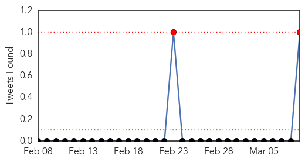
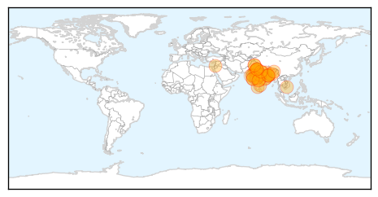

Measles
30-Day Web Trend
0 alerts, 0 warnings

30-Day Twitter Trend
2 alerts, 0 warnings

Article Locations

Article Confidences

Top Articles:
- 0.990
- Measles Outbreak Continues to Spread
- 0.989
- Peninsula Warrior: Official News Publication Serving Joint Base Langley-Eustis, Virginia: The military authorized and official news, sports, photography and entertainment publication of Fort Eustis an
- 0.980
- Measles advisory issued for Vegas restaurant, expo attendees
- 0.973
- Dr. Neha Sharma: Measles mania
- 0.973
- Scare tactics aimed at vaccine skeptics may backfire
- 0.958
- Measles outbreak at 149 cases in eight states, Canada and Mexico
- 0.950
- More measles cases tied to Disneyland, Illinois day care
- 0.949
- California measles outbreak
- 0.946
- 14 infants exposed to measles return to Santa Monica day care center
- 0.936
- Potential Measles Exposure Sites Include Calif. Target, Walmart
- 0.923
- Possible measles exposure for library patrons
- 0.915
- Measles at Christchurch preschool
- 0.911
- Arizona official: Measles outbreak apparently winding down
- 0.875
- Despite D.C. measles cases, some refuse vaccination
- 0.867
- Doctors survey: Parents pressuring to delay shots
- 0.841
- Aliso Niguel High School
- 0.811
- Disney gave input on measles health messages
- 0.806
- Measles infections in California grow to 123
- 0.734
- A confirmed measles case prompts immunisation warning
- 0.697
- Anti-vaxxers among Canadians of all demographics, poll finds: ‘It could be your neighbour. That’s the scary thing’
- 0.601
- Mississippi, West Virginia toughest on school immunizations
- 0.569
- UN health agency urges Europe to step up measles vaccination
- 0.537
- Vaccinate against measles
- 0.525
- Pacifica School District asks parents to immunize against measles
- 0.516
- Vaccinate against measles
- 0.512
- Correction: Measles-California story
Top Tweets:
- 0.535
- Very few people (about 3 out of 100) who get 2 doses measles vax still get measles if exposed to the virus.
Swine Flu
30-Day Web Trend
13 alerts, 9 warnings

30-Day Twitter Trend
2 alerts, 0 warnings

Article Locations
Article Confidences

Top Articles:
- 1.000
- Swine flu in India: 40 new cases of H1N1 virus in Uttar Pradesh, 22 in Odisha
- 0.999
- Govt to tackle swine flu
- 0.999
- 31 New Swine Flu Cases in Telangana
- 0.999
- 31 Fresh Swine Flu Cases Reported in Telangana
- 0.999
- Man diagnosed with H1N1 flu in Jerash, in good condition
- 0.999
- Swine flu: Government 'closely monitoring' situation across India
- 0.998
- Health Ministry Sets up Centers to Tackle Threat of Flu Virus
- 0.998
- 51 more swine flu deaths, affected cases cross 25,000 mark
- 0.998
- Swine flu claims 51 more lives, over 16,000 affected
- 0.995
- 40 new cases of H1N1 in Uttar Pradesh
- 0.995
- Official reviews flu situation
- 0.995
- Manipur stares at swine flu outbreak
- 0.995
- 40 new cases of H1N1 in Uttar Pradesh
- 0.995
- Swine flu death toll touches 1,158, Ahmedabad lawyers stay away from work
- 0.994
- Three fresh H1N1 cases reported in Jammu
- 0.994
- As swine flu toll rises, states told to operate 24X7 helplines
- 0.993
- ‘Continue H1N1 control measures’
- 0.993
- Teams screen swine flu at border - Click Ittefaq
- 0.991
- No swine flu in Tripura, girl tests positive in Nagaland
- 0.991
- Bihar airlifts medicines as swine flu cases rise to 13
- 0.990
- Swine flu toll in Kashmir rises to nine
- 0.990
- Swine flu: Delhi government asks labs not to overcharge for tests, puts cap at Rs 4,500
- 0.989
- Chemists selling masks at high prices over swine flu scare
- 0.988
- Govt hospitals in dock for refusing swine flu patient
- 0.987
- Private Hospitals Prey on Your Flu Fear, Push for Needless Test
- 0.982
- Be alert to swine flu virus, but no need to panic, says Health Minister
- 0.981
- 2 suspected swine flu patients in Manipur hospital
- 0.980
- Kashmir policeman dies of suspected swine flu, 84 cases confirmed
- 0.979
- Mizoram reports first case of swine flu, woman was in Delhi
- 0.976
- 4 more H1N1 deaths reported from Maharashtra; toll mounts to 215
- 0.953
- Temperature rise to take chill out of air
- 0.946
- Now, bodies of swine flu patients handed over to kin
- 0.940
- One more dies of swine flu in Bengal, toll now 14
- 0.917
- 3 more H1N1 cases in Trichy district
- 0.878
- Patient failed to get bed in ICU, dies
- 0.720
- Swine flu claims one more life in West Bengal, death toll rises to eight
- 0.702
- Mulayam Singh Yadav cleared of swine flu
- 0.642
- Sonam Kapoor hospitalised; swine flu test conducted
Top Tweets:
-
No tweets found for Mar 09, 2015